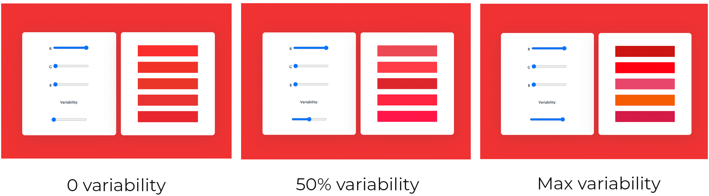
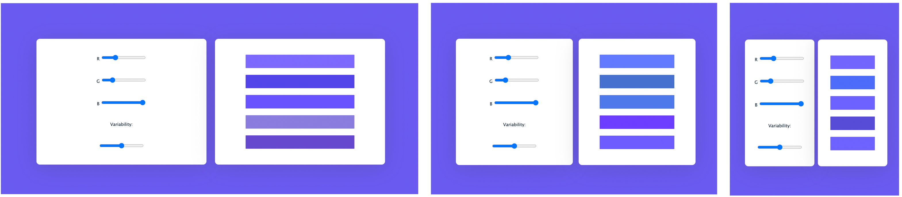

As an artist, designer or developer, working with colour is important.
I had used online colour generation tools before such as
Adobe's Colour Generator
however I wanted to develop my own tools, to have more control over the outcome & understanding for how they work.
Initial Prototype
This simple interface allows users to generate colour schemes based on RGB inputs & random integer generation.
The varibaility in the colour schemes can also be controlled.
Snapshots


This was also one of my first explorations of responsive web design, where the interface
works effectively at different window sizes.
Next Steps
- Exploration of different colour spaces: RGB, CMYK, HSB & Hexadecimal
- Designing different input methods: eyedropper tooling, colour wheel
- Experimenting with different methods of random generation
- Implementing concepts from colour theory to create a smarter colour generation tool
e.g. generation of different types of colour scheme: monochromatic, analogous, complementary, triadic etc.
Currently in Progress